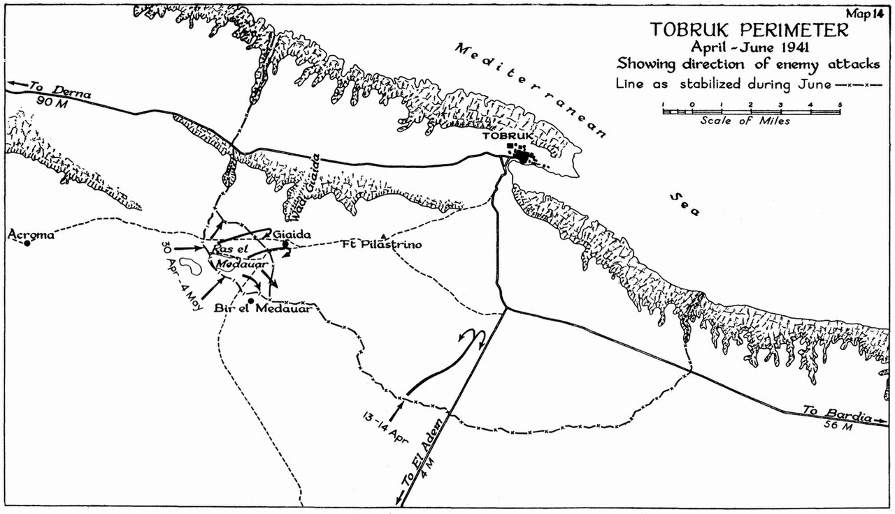

Asedio de Tobruk
La tenaz defensa del puerto libio de Tobruk por las tropas de la Commonwealth —los célebres "ratas de Tobruk"— frente al Afrika Korps de Rommel, durante 241 días.
Datos
| Fechas | 10 de abril – 27 de noviembre de 1941 (241 días) |
|---|---|
| Lugar | Tobruk, Cirenaica (Libia) |
| Resultado | Victoria aliada; la plaza resiste hasta ser liberada |
| Bando sitiador | Alemania e Italia (Afrika Korps) |
| Defensores | Reino Unido, Australia, India, Polonia y Checoslovaquia |
| Comandantes | Erwin Rommel (Eje); Leslie Morshead (Australia) |
| Clave | El puerto de Tobruk, esencial para abastecer cualquier avance por la costa |
Bando sitiador
Afrika Korps
Defensores
y Commonwealth
Brigada de los Cárpatos
Introducción
A comienzos de 1941, el recién llegado Afrika Korps de Erwin Rommel invirtió la situación en el desierto y empujó a los británicos de vuelta hacia Egipto. Pero el puerto de Tobruk, con su guarnición de la Commonwealth, quedó aislado a su espalda y se negó a rendirse. Su resistencia se convirtió en una espina clavada en el flanco de Rommel durante más de ocho meses.
Razones
- Un puerto vital: Tobruk era el único gran puerto de aguas profundas de la región; sin él, Rommel debía traer todo su suministro por carretera desde muy lejos, lo que limitaba su avance.
- Fijar al enemigo: para los aliados, mantener Tobruk obligaba a Rommel a distraer fuerzas en el asedio en lugar de invadir Egipto.
- Valor moral: resistir era un símbolo en un momento en que el Eje avanzaba en todos los frentes.
Cuerpo (desarrollo)
La guarnición, con la 9.ª División australiana del general Morshead como núcleo, rechazó varios asaltos alemanes en abril y mayo de 1941, infligiendo duras pérdidas a los blindados de Rommel. Rodeada por tierra, la plaza se abasteció por mar bajo constantes ataques aéreos, en la peligrosa ruta que la Royal Navy mantuvo abierta.
Los defensores, apodados con orgullo las "ratas de Tobruk" (un mote que les puso la propaganda enemiga y que ellos adoptaron), soportaron el calor, el polvo y los bombardeos. El asedio se levantó finalmente en noviembre de 1941, cuando la ofensiva británica Operación Crusader rompió el cerco y enlazó con la guarnición.

Mapa del perímetro de Tobruk (abril–junio de 1941), Wikimedia Commons: el sistema defensivo de la plaza sitiada. Leyenda original en inglés.
Conclusión
La defensa de Tobruk demostró que el Afrika Korps no era invencible y privó a Rommel del puerto que necesitaba para sostener un avance sobre Egipto en 1941.
- Se convirtió en un símbolo de resistencia para los Aliados, especialmente para Australia.
- Obligó a Rommel a mantener fuerzas inmovilizadas en el asedio durante meses.
- Curiosamente, en junio de 1942, tras la batalla de Gazala, una nueva guarnición de Tobruk sí caería rápidamente en manos de Rommel, un duro golpe para los Aliados.
Curiosidades
- "Las ratas de Tobruk": el propagandista nazi "Lord Haw-Haw" los llamó así con desprecio, comparándolos con ratas atrapadas; los defensores adoptaron el apodo con orgullo.
- Defensores internacionales: junto a australianos y británicos combatieron indios, polacos (la Brigada de los Cárpatos) y checoslovacos.
- El "expreso de Tobruk": así llamaban a los barcos de la Royal Navy que, de noche, arriesgaban la travesía para llevar suministros y relevar tropas.
Teorías
Debates e interpretaciones historiográficas, presentados como tales:
- ¿Cuánto frenó realmente a Rommel? Se debate hasta qué punto el asedio, más que las dificultades logísticas generales del Eje, fue lo que impidió a Rommel invadir Egipto en 1941.
- La caída de 1942: se discute por qué la fortaleza que resistió 241 días en 1941 cayó en un solo día en 1942, un contraste que aún genera análisis.